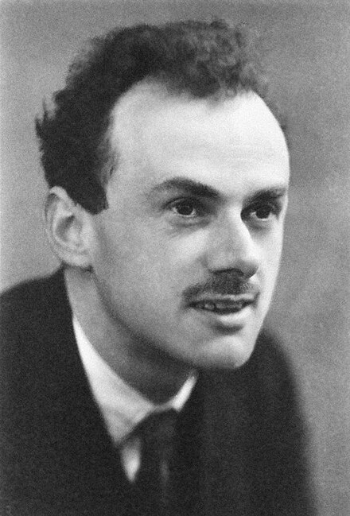
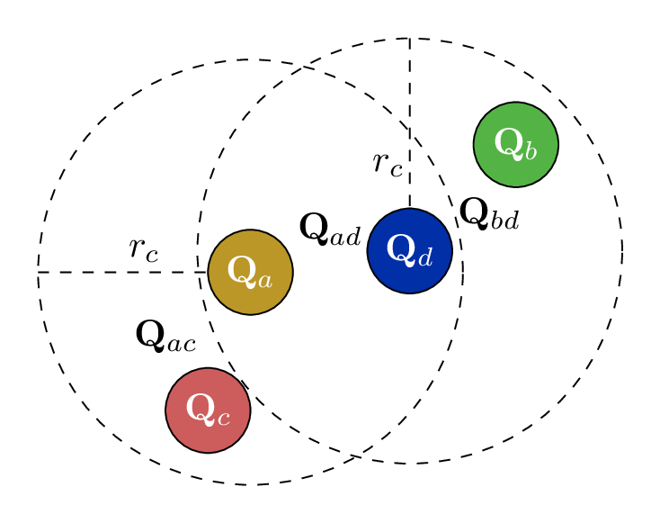
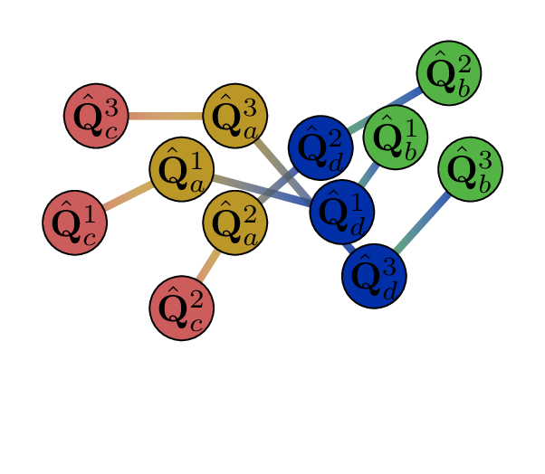
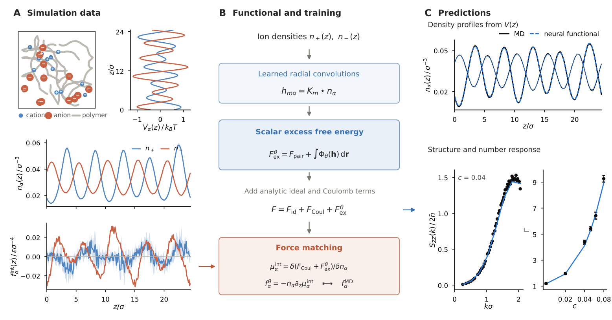
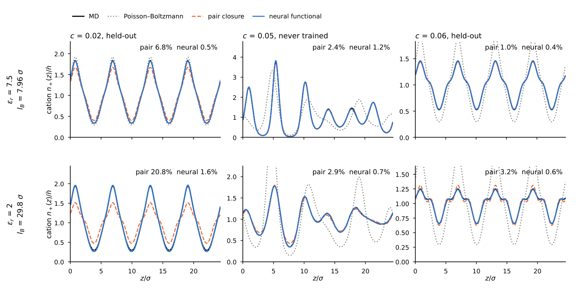
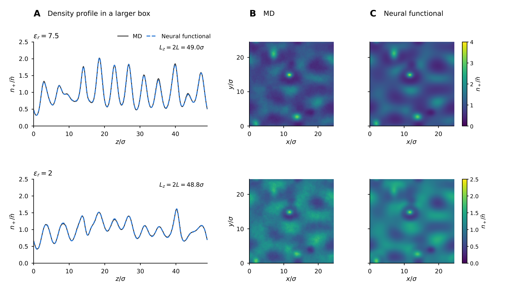
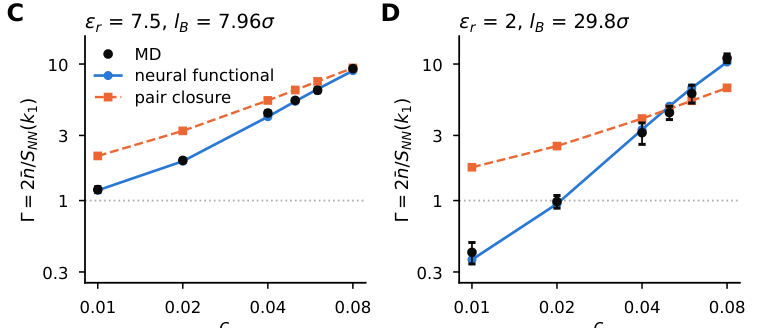
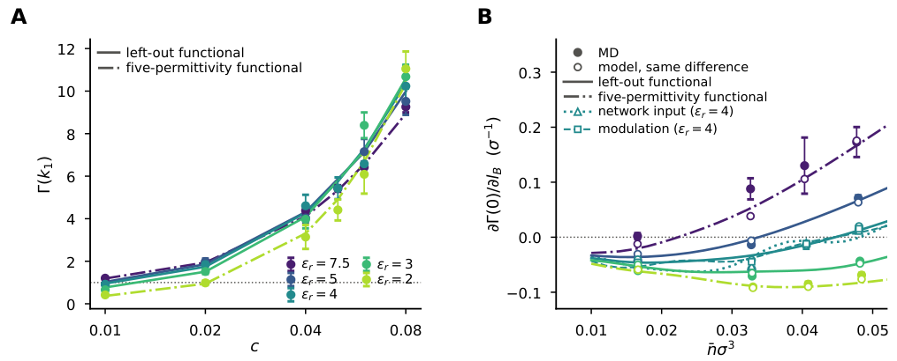
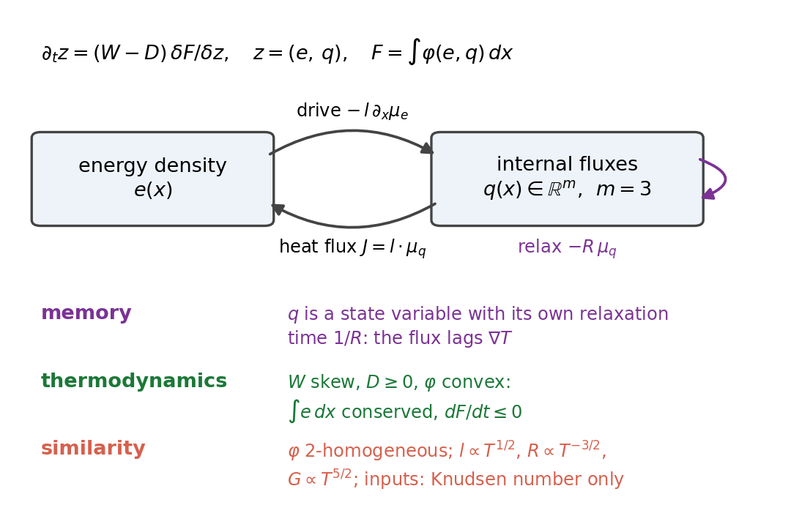
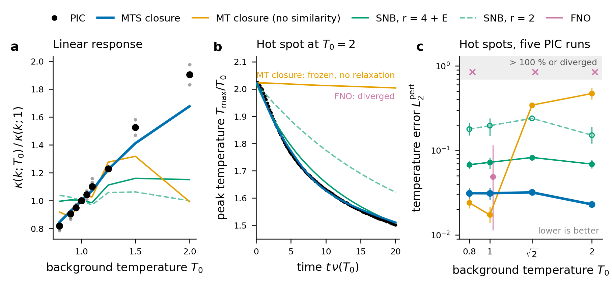

Structure-Preserving Machine Learning of Closures
from coarse-grained molecular dynamics to density functionals
Liyao Lyu University of California, Los Angeles Part I is joint work with Huan Lei (Michigan State University)
I. Coarse-grained MD
II. Neural density functional
III. Kinetic heat-flux closure
Thank the host. One sentence: my work is about learning the unknown closure of a reduced model from fine-scale simulations, while building in the exact structure the reduced model must have.
Three examples today: dynamics (CGMD, main), equilibrium structure (neural DFT, main), and a brief look at a kinetic closure for plasmas.
Multi-scale modeling:
Background

Dirac, Paul Adrien Maurice. Quantum mechanics of many-electron systems.
The right physical principle for most of what we are interested in is already provided by the principles of quantum mechanics (QM).
The ability to reduce everything to simple fundamental laws does not imply the ability to start from those laws and reconstruct the universe.
The constructionist hypothesis breaks down when confronted with the twin difficulties of scale and complexity.
Anderson, Philip W. More Is Different: Broken symmetry and the nature of the hierarchical structure of science.
Scale - High Dimensionality - Curse of Dimensionality Complexity - Empirical Model - Oversimplification
Dirac: the laws are known. Anderson: knowing them does not let us reconstruct the phenomena, because of scale and complexity.
Scale: too many degrees of freedom. Complexity: the reduced models we write by hand oversimplify.
Machine learning attacks both, but only if the learned model keeps the structure of the exact theory.
One idea, three closures
reduced model = exact structure (known) + closure
I. Coarse-grained MD
all-atom MD → Langevin dynamics
\(\mathbf K(\bQ,t)\)
memory kernel
II. Density functional
polymer-electrolyte MD → \(F[\bn]\)
\(\Fex[\bn]\)
excess free energy
III. Kinetic closure
particle-in-cell → fluid equation
\(J\)
heat flux
Learn the closure from fine-scale data. Build the structure in , so the model works where there is no data.
Every part has the same shape: a fine-scale model we trust, a reduced model with a known structure, an unknown closure, and a transfer test.
Structure built in. I: translation, rotation, permutation symmetry, extensivity, second fluctuation-dissipation theorem. II: integrability, Noether identities, perfect screening, exact energy identity in the Bjerrum length. III: memory, free-energy dissipation, similarity (scaling symmetry).
Transfer tests. I: collective transport, larger systems, nonequilibrium flows. II: larger boxes, 2D fields, unseen concentration and permittivity. III: other temperatures.
Time: about 12 min on I, 14 on II, 4 on III.
PART I
How do we bridge atomistic simulations to mesoscale phenomena?
Atomistic simulations track every atom but are too expensive for large systems. Coarse-grained (CG) models keep collective variables, e.g. centers of mass (dashed circles), instead of atoms (solid circles).
Existing CG models oversimplify memory effects. We keep the many-body, non-Markovian memory while staying efficient.
Mori-Zwanzig Formalism
In the Mori-Zwanzig formalism , the dynamics of the coarse-grained (CG) variables follow:
\[
\begin{aligned}
\dot{\mathbf{Q}} &= \mathbf M^{-1} \mathbf{P}, \\
\dot{\mathbf{P}} &=
\underbrace{-\nabla U(\mathbf{Q})}_{\text{Conservative Force}}
- \underbrace{\int_0^t {\mathbf{K}(\mathbf{Q}(s), t-s) }\mathbf{V}(s) ds}_{\text{Memory Contribution}}
+ \underbrace{\mathbf{R}(t)}_{\text{Random Force}}.
\end{aligned}
\]
\( \mathbf{Q} \) : Center of mass\( \mathbf{P} \) : Total momentum\( \mathbf{V} \) : Velocity\( \mathbf{M} \) : Mass matrix
The Mori-Zwanzig formalism is general .
In practice, one has to resort to simple and ad hoc approximations.
Oversimplification of Memory Contribution under-explored .
MZ gives the exact form: conservative force, memory, random force. It does not give closed-form expressions: the memory kernel as a function of Q is unknown. This is the closure.
Much effort on the conservative force (many-body potentials); the memory kernel is typically reduced to pairwise or isotropic. Our results show the many-body, state-dependent nature is essential for transport and hydrodynamic correlations.
Ad hoc Approximations
In the Mori-Zwanzig formalism , the dynamics of the coarse-grained (CG) variables are unknown.
Many existing models make simplifying approximations :
Markovian-Pairwise \( \sum_{j} \mathbf{K}(Q_{ij}) \mathbf{V}_j . \)
Non-Markovian Isotropic \( \int_0^t \mathbf{K}(t-s) \mathbf{V}(s). \)
Non-Markovian Pairwise (NM-DPD) \( \sum_j \int_0^t \mathbf{K}(Q_{ij}, t-s) \mathbf{V}_{ij}(s) \, ds. \)
🚀 Non-Markovian Manybody (Our Model)
\( \bm{\Xi}(\mathbf{Q}) \int_0^t e^{- \bm{\Lambda} (t-s)} \bm{\Xi}(\mathbf{Q})^T \mathbf{V}_{ij}(s) \, ds, \)
where \( \bm{\Xi}\) is neural network encode the manybody and \( \bm{\Lambda} \) are learnable parameters encode the Non-Markovian .
First ignores time dependence, second assumes isotropic, third combines pairwise and time dependence.
We introduce many-body memory: the kernel depends on the collective arrangement of particles. Essential for collective behavior.
More expressive, but unrestricted parameterizations risk violating physical laws, so we enforce symmetry constraints.
Important New Issues
\(\mathbf{\Xi}\)(
Ξ1 1
Ξ1 2
Ξ1 3
Ξ2 1
Ξ2 2
Ξ2 3
Ξ3 1
Ξ3 2
Ξ3 3
Clear
\(\mathbf{\Xi}\)(
Ξ1 1
Ξ1 2
Ξ1 3
Ξ2 1
Ξ2 2
Ξ2 3
Ξ3 1
Ξ3 2
Ξ3 3
Clear
Translation: shift every molecule by b, the kernel is unchanged. Rotation: rotate the molecules, the kernel rotates accordingly. Permutation: relabeling.
Extensive: a model learned on a small periodic system applies to a larger system at the same density. This lets us simulate phenomena not affordable atomistically.
Neural Network Representation
🚀 Non-Markovian Manybody (Our Model)
\[
\dot{\mathbf{P}} = \mathbf{F}^C - \bm{\Xi}(\mathbf{Q}) \int_0^t e^{- \bm{\Lambda} (t-s)}
\bm{\Xi}(\mathbf{Q})^T \mathbf{V}_{ij}(s) \, ds + \mathbf{R}(t),
\]
Introducing coordinate feature \(\hat{\mathbf Q}^k_i\):
\( \hat{ \mathbf Q}^k_i = \mathbf{Q}_i \oplus \sum_{l\in\mathcal{N}_i} f^k(|\mathbf{Q}_{il}|)\,\mathbf{Q}_{il} \)
Compute the distance on the feature:
\( \hat{\mathbf{Q}}_{ij}^{k} = \hat{\mathbf{Q}}_i^{k} - \hat{\mathbf{Q}}_j^{k} \)
Construct the state dependent part of the memory kernel:
\( \boldsymbol{\Xi}^n_{ij} = \sum_{k=1}^K h_{n,k}(\hat{ \mathbf Q}_{ij}^T \hat{ \mathbf Q}_{ij}) \hat{ \mathbf Q}_{ij}^k \otimes \hat{ \mathbf Q}_{ij}^k \)


Introduce \(\hat Q\) features from local neighbor info \(Q_{il}\). These inherit symmetry by construction.
Then compute feature distances and build state-dependent kernels. We can prove the symmetry constraints hold.
Simulation of the Coarse-Grained Models
🚀 Non-Markovian Manybody (Our Model)
\( \dot{\mathbf{P}} = \mathbf{F}^C - \bm{\Xi}(\mathbf{Q}) \int_0^t e^{- \bm{\Lambda} (t-s)} \bm{\Xi}(\mathbf{Q})^T \mathbf{V}_{ij}(s) \, ds + \mathbf{R}(t), \)
The construction easy to do simulation.
\[
\begin{aligned}
\dot{\mb Q} &= \mb M^{-1}\mb P \\
\dot{\mb P} &= -\nabla U(\mb Q) + \bm \Xi(\mb Q)\bm\zeta \\
\dot{\bm\zeta} &= - \bm \Xi(\mb Q)^T \mb V - \bm\Lambda \bm\zeta + \bm \xi(t).
\end{aligned}
\]
🔑 Thermodynamic Consistency
By choosing the white noise \(\bm\xi(t)\) following
\( \left\langle \bm \xi(t) \bm \xi(t') \right\rangle = \beta^{-1}(\bm\Lambda + \bm\Lambda^T) \delta(t-t'), \)
model retains the consistent invariant distribution
\( \rho_{\rm eq}(\mb Q, \mb P, \bm\xi) \propto \exp[{-\beta(U(\mb Q) + \mb P^T \mb M^{-1} \mb P/2 + \bm \zeta^T \bm\zeta/2})]. \)
The stochastic integro-differential equation becomes a stochastic differential equation with an auxiliary variable.
With the noise obeying the second fluctuation-dissipation theorem, the equilibrium distribution is the Boltzmann distribution, determined by the conservative term alone: the memory term captures dynamics without spoiling statics.
Numerical Result
Velocity auto correlation function (VACF)
\[ c(t)=\frac{\lt V_i(t) \cdot V_i(0) \gt }{ \lt V_i(0) \cdot V_i(0) \gt } \]
Model Temporal Spatial M-DPD Markovian Pairwise NM-GLE Non-Markovian Isotropic NM-DPD Non-Markovian Pairwise NM-MB Non-Markovian Manybody
VACF: our model (NM-MB) and the state-independent GLE both match, because GLE fits the kernel to the VACF. Matching VACF does not mean recovering the dynamics.
Numerical Result
Velocity cross correlation function (VCCF)
\[ C^{xx}(t; r_0) = \mathbb{E}[\mathbf{V}_i(0)\cdot\mathbf{V}_j(t) \vert Q_{ij}(0) = r_0] \]
VCCF: momentum transfer rate at a fixed distance. GLE falls short; our model captures the main contribution. NM-DPD is decent because VCCF is its fitting target.
Numerical Result
van Hove function (VHF)
\( G(r, t) \propto \frac{1}{M^2} \sum_{j\neq i}^M \delta(\Vert \mathbf{Q}_i(t) - \mathbf{Q}_j(0)\Vert - r) \).
VHF: time evolution of the RDF. Both NM-DPD and NM-GLE fall short; our model holds.
Numerical Result
normalized correlations of the
Longitudinal Hydrodynamic Modes
\[
\begin{split}
C_L(t) &= \langle \tilde{u}_1(t)\tilde{u}_1(0)\rangle \\
\tilde{\mb u} &= \frac{1}{M}\sum_{j=1}^M \mb V_j {\rm e}^{i\mb k \cdot \mb Q_j}
\end{split}
\]
Wave propagation modes: coefficients of the linearized Navier-Stokes equation in the spectral domain. Longitudinal: NM-DPD and our model both do well, as the conservative term dominates.
Numerical Result
normalized correlations of the
Transverse Hydrodynamic Modes
\[
\begin{split}
C_T(t) &= \langle \tilde{u}_2(t)\tilde{u}_2(0)\rangle \\
\tilde{\mb u} &= \frac{1}{M}\sum_{j=1}^M \mb V_j {\rm e}^{i\mb k \cdot \mb Q_j}
\end{split}
\]
Transverse modes: our model clearly outperforms the others. This is where the many-body memory matters.
Nonequilibrium: does an equilibrium-trained model still work?
Under an external field \(V_{\rm ext}\), the exact kernel is an average over the conditional distribution
\[ \rho_{V_{\rm ext}}(\bz\,|\,\bZ)\ \propto\ \delta\big(\phi(\bz)-\bZ\big)\,\rho_{V_{\rm ext}}(\bz) \]
so it changes with the field and with time: \(\mathbf K(\bQ,t,s)\).
Fix: enlarge the set of CG variables until
\( \rho_{V_{\rm ext}}(\bz|\bZ)\approx\rho_0(\bz|\bZ) \).
One model trained at equilibrium then works for different fields.
For a given configuration Q, the MZ kernel is K(Q,t) = P_Z[(e^{QLt} Q L P)(Q L P)^T], with the projection P_Z f(z) = E[f(z) | phi(z) = Z]. The expectation is over the conditional distribution, which under an external field differs from equilibrium and changes in time. The kernel becomes K(Q,t,s). A model trained for one field and time cannot be reused for another (Grabert 1982).
Fix: keep the projection on the equilibrium marginal, but enlarge the CG variable set so that the conditional distribution under the field is close to the equilibrium one. Then the kernel is again K(Q, t-s) and the model generalizes across external fields. Next two slides: reverse Poiseuille flow and vortex flow.
Numerical Result: reverse Poiseuille flow
Trained at equilibrium, the CG model predicts the velocity profile of reverse Poiseuille flow and the shear-rate dependence of viscosity.
Numerical Result: Vortex flow
Same model, a different external field: decaying vortex flow. No retraining.
Part I: memory extends time, not space
✓ What we gain
Many-body memory + built-in structure recover transport, hydrodynamic modes and nonequilibrium flows.
✗ What we do not
The model still tracks particles. Domain size and geometry stay at the MD scale.
⇒ Part II: a continuum closure for larger, inhomogeneous systems
Bridge. The equilibrium statistics of the CG model are set by the conservative term U(Q); memory adds dynamics on top. So CGMD extends time scales, but it keeps particles, and the domain stays MD-sized.
For electrodes, confinement and long-wavelength fields we need a density description. Its unknown is again a closure: the excess free energy. Same strategy, different exact structure.
Classical DFT: one functional gives all equilibrium structure
\[
F[\bn]=\underbrace{\Fid[\bn]}_{\text{ideal gas}}+\underbrace{\FC[\bn]}_{\text{Coulomb mean field}}+\underbrace{\Fex[\bn]}_{\color{myred}{\text{unknown}}}
\]
\(\dfrac{\delta F}{\delta n_\alpha}\)
density profiles in any external field
\(\dfrac{\delta^2 F}{\delta n_\alpha\,\delta n_\beta}\)
bulk structure factors
\(\Fex\) is the closure. It plays the role the memory kernel played in Part I.
Ions described by their density profiles n = (n+, n-), with the polymer integrated out.
Equilibrium profiles minimize F + sum_alpha int V_alpha n_alpha at fixed particle numbers. Euler-Lagrange: kT ln(Lambda^3 n_alpha) + e_alpha phi + mu_ex_alpha + V_alpha = mu_alpha, with Poisson for phi.
First derivative gives profiles, second derivative gives bulk correlations. F_ex contains all correlations beyond the ideal gas and the Coulomb mean field, including the response of the chains to the ions.
No existing functional keeps all the structure
Sammüllerlearned \(c^{(1)}\)
Bui–Coxlearned \(c^{(1)}\)
Dijkmanlearned \(\Fex\)
Chenglearned \(\Fex\)
This work
Integrable (a true free energy) ~ ✗ ✓ ✓ ✓ Continuous symmetry ~ ~ ✗ ~ ✓ Noether identities ~ ✗ ✗ ✗ ✓ Long-range electrostatics ✗ ✓ ✗ ✗ ✓ Nonplanar geometry ✗ ✗ ✗ ✓ ✓ Independent of the grid ✗ ✗ ✗ ✗ ✓
✓ built in ~ only numerically or only on the grid ✗ no
Analytical theories (fundamental measure theory for packing, mean spherical approximation for electrostatics) are built on charged hard spheres, with no solvation by chains; each term comes from a different reference system.
Learned functionals since 2023: Sammueller et al. and Bui-Cox learn the one-body direct correlation c1 locally (Bui-Cox with explicit electrostatics). Dijkman et al. and Cheng (equivariant on a cubic grid) learn F_ex directly.
A learned c1 need not derive from a free energy. Grid-based forms keep only discrete symmetries and fix the box. Sammueller: integrability and Noether verified numerically only. "~" under symmetry = grid symmetries only.
Our functional: learned radial kernels + a pointwise network
\[
\Fex^\theta[\bn]=\underbrace{\tfrac12\textstyle\iint n\,u\,n}_{\text{pair term}}
+\int \Phi_\theta\big(\mathbf h(\br)\big)\,\intd\br,
\qquad \mathbf h=K_m\star n_\alpha
\]
Integrable
a scalar \(F\), so \(\mu=\delta F/\delta n\) exactly
Noether
all rotations and translations: zero net force and torque
Screening
Coulomb exact, learned part short-ranged
No grid
continuous kernels, works in any box
Built in by construction, not learned.
Six learned radial kernels K_m average each density over several length scales; a small MLP Phi_theta acts pointwise on the 12 weighted densities h. Plus a quadratic pair term, which on its own is our "pair closure" baseline. About 20k parameters.
Integrability: the network represents the scalar F_ex, so mu_ex = dF/dn exactly, the Hessian is symmetric, free-energy differences are path independent.
Radial kernels + pointwise Phi: invariant under all translations, rotations, reflections. Total internal force and torque vanish for any profile (Noether).
Coulomb explicit, learned part short-ranged: electroneutrality and Stillinger-Lovett, S_ZZ(k)/2n = k^2/kappa_D^2 + O(k^4).
Kernels are continuous functions of distance; a discretization enters only at evaluation. Proofs in the SI. Compare Part I: there symmetry and FDT; here integrability, Noether, screening.
Permittivity enters through one exact identity
\[ \frac{\partial F[\bn;\lB]}{\partial \lB}=k_BT\,\langle U_C\rangle_{\bn,\lB} \]
derivative in the Bjerrum length = Coulomb energy, measured in MD, never trained on
so we use a coupling law instead of feeding \(\lB\) to the network:
\[ \Fex[\bn;\lB]=F_0[\bn]+\lambda\,F_1[\bn]+s(\lambda)\,F_2[\bn],\qquad \lambda=\lB/\lB^{(0)} \]
\(\lambda F_1\): linear, strong coupling
\(s(\lambda)F_2\): saturates, ion pairing
Permittivity varies between polymers. In the CG energy, in units of kT, U_0 + l_B U_C with U_C = sum z_i z_j / r_ij. So the functionals form a one-parameter family F[n; l_B].
Coupling-constant integration (classical analogue of the adiabatic connection): dF/dl_B = kT <U_C>. The l_B-dependence of F_ex is the Coulomb correlation energy. Not arbitrary.
s(lambda) = 1 - exp(-lambda/lambda_s). lambda F_1 linear in l_B, as in the mean spherical approximation at strong coupling; s(lambda) F_2 saturates, as for ion pairing. The three share kernels and hidden layers.
In the bulk this gives a testable identity: dGamma(0)/dl_B = (n/2kT) d^2/dn^2 [u_C(n; l_B)/l_B], with u_C from zero-field MD. Shown in Result 4.
Training: match the force densities measured in MD

\( \mathbf f_\alpha(\br) = -n_\alpha(\br)\,\nabla\mu^{\rm int}_\alpha(\br;[\bn]) \) no chemical-potential labels needed
(A) MD of a CG polymer electrolyte (Tsamopoulos and Wang, LAMMPS): 400 chains x 30 beads, cation/anion diameters 0.4 / 1.6 sigma, both solvated by monomers. Static planar potentials V_alpha(z) of a few kT, four families, wavelengths from the box length down to a few sigma.
(B) Gradient of Euler-Lagrange + first YBG equation: internal force density on species alpha equals -n grad mu_int. MD samples f directly; the constants mu_alpha drop out. Loss: inverse-variance weighted real-space residuals + Fourier residuals weighted by 1/k^2.
Data: 5 permittivities 7.5, 5, 4, 3, 2 (l_B = 8 to 30 sigma); 5 concentrations 0.01 to 0.08 cations per monomer; c = 0.05 never trained. 276 training runs, 86 held-out, 76 at c = 0.05. One functional across all five permittivities.
(C) Structure factors and number response never enter the loss: they test the learned curvature.
Profiles within 1–2%, also at an untrained concentration

mean error at \(\varepsilon_r=2\): Poisson–Boltzmann 23% · pair closure 5.4% · neural 1.6%
Rows: weakest and strongest coupling. Columns: held-out, never-trained concentration, held-out.
Mean relative L2 error over all test runs. eps_r = 7.5: PB 25%, pair 2.8%, neural 1.1%, neural at untrained c = 0.05: 0.80%. eps_r = 2: PB 23%, pair 5.4%, neural 1.6%, untrained c: 0.75%.
Mean field is far off. The pair closure (density-independent kernel) is fine at weak coupling but misses amplitude at strong coupling: one kernel cannot serve all concentrations.
Trained on planar profiles, works in larger boxes and in 2D

4× box: 0.3–0.5% error · 2D fields: 1.7–3.3%, at the level of MD noise
No parameter refers to a grid or box. Grid spacing 0.05 to 0.2 sigma changes mu_ex by less than 1e-4 of its variation across the box.
Boxes 2x and 4x the training length: errors 0.9 to 1.7% and 0.3 to 0.5% (pair closure 3.0 to 5.5% and 1.7 to 2.0%).
Aperiodic 2D potentials (oblique plane waves + irregular Gaussian wells and barriers): 1.7 to 3.3%, MD noise 1.7 to 3.0%.
Bulk response: the pair closure gets the sign wrong

Crossing \(\Gamma=1\) needs a density-dependent kernel. A quadratic closure cannot do it. This quantity is not in the loss.
Gamma(k1) = 2n / S_NN(k1), the long-wavelength number response; Gamma = 1 for an ideal solution. From Ornstein-Zernike with the learned Hessian: S(k)^-1 = N^-1 + 4 pi l_B zz^T / k^2 + W(k)/kT.
At eps_r = 2, MD goes from 0.42 at c = 0.01 through 1 to 11.1 at c = 0.08: fluctuations enhanced at low salt (ion association), suppressed at high salt (Coulomb ordering). The functional follows; the pair closure puts c = 0.01 on the wrong side of 1.
Why: Gamma ~ 1 + (n/2kT) q^T W q. A quadratic closure has a density-independent W, so Gamma - 1 cannot change sign. The MD kernel changes sign at eps_r = 2 (-140 to +320 kT sigma^3).
Charge and number structure factors over 0.25 < k sigma < 2.1: relative RMS errors 2 to 7% (see fig. 4 A, B of the paper; also panel C on the previous overview figure).
Transfers to a permittivity it has never seen

(A) left-out \(\varepsilon_r\): within MD error.
(B) exact energy identity, checked on MD Coulomb energies never used in training.
Leave-one-permittivity-out (eps_r = 5, 4, 3): profile errors 1.2 to 1.5%, as good as held-out runs at trained permittivities; Gamma(k1) at 16 unseen state points within MD uncertainty. Without the coupling law one F_ex cannot describe four permittivities: errors 11 to 23%, one fifth of the Euler-Lagrange solves fail.
(B) dGamma(0)/dl_B from the functional vs second differences of MD Coulomb energies. The sign change (association at low density, ordering at high density) is reproduced, also at the left-out permittivity.
Physics (paper fig. 6 C-F): charge channel at ion contact scales with l_B (MSA-like), at the pair scale it saturates. The number response of the concentrated melt varies by less than 20% across permittivities: set by packing and solvation.
Same data, same loss: structure beats architecture
one-body network(Sammüller, Bui–Cox) convolutional \(\Fex\)(Dijkman) lattice \(\Fex\)(Cheng) this work accuracy 2nd best solver rarely converges solver fails 10–25% best with ¼ of the data error +≈⅔ — — error +≈¼ exact identities violated up to 55% up to 6% up to 6% machine precision
Built-in structure means less to learn.
Three published forms adapted to two species + the analytic Coulomb term, trained by force matching on our data at fixed coupling (eps_r = 7.5 and 2). Fair comparison under one protocol, not the published methods with their own data.
With a quarter of the training runs our error rises by about a quarter, which is about the one-body network on all data; the one-body network's rises by about two thirds with some solver failures.
Exact identities: integrability (Jacobian asymmetry) up to 55% for the one-body net; Noether net-force error up to 14% one-body, 6% for the other two; ours at numerical precision.
Control on the truncated Lennard-Jones fluid of Cheng et al.: same ordering, our error less than half of the best alternative.
The MTS closure: all three properties built in

Augment the energy density e(x) with m = 3 internal fluxes q(x); heat flux J = l . mu_q. d_t (e, q) = (W - D)(mu_e, mu_q): W skew (reversible, Onsager-Casimir), D = diag(0, R - d_x G d_x) positive semidefinite.
Free energy phi = (1/2) e^2 nu(q/e)^2, nu convex (input-convex network), nu >= 1, nu(0) = 1. So int e dx is conserved, dF/dt <= 0, uniform state minimizes F: stable where there is no data.
Similarity: l = T^{1/2} l(Kn), R = T^{-3/2} R(Kn), G = T^{5/2} G(Kn), with the Knudsen number the only input. Data at one temperature determine the closure at every temperature.
Baselines: SNB (r = 2, 4), a Fourier neural operator trained on the same data, and the MT ablation, which keeps everything but replaces the scaling by learned functions of T.
Trained at one temperature, accurate at all of them

Trained at \(T_0=1\) only. MTS: 2–4% error at every \(T_0\). Without similarity: frozen. Neural operator: diverges.
All closures trained on 24 PIC runs at T0 = 1, deployed on a grid 16x coarser than PIC. At T0 = 1 on 22 unseen profiles: MTS 2 to 8% (median 4%), SNB 5 to 45%, FNO 4 to 30% and diverging on 7 of 22.
(a) Conductivity ratio rises to 1.9 at T0 = 2: MTS within 10% on 29 of 31 points; SNB has the right scaling but the wrong shape; MT has learned no temperature dependence.
(b, c) Hot spots at T0 = 0.8, sqrt 2, 2: MTS 2 to 4% everywhere. MT does not relax the hot spot at T0 = 2. FNO diverges on every run at T0 != 1.
Symmetry gives the transfer, thermodynamics keeps it stable, memory makes it accurate. 1D, no magnetic field so far.
Learn the closure, keep the structure
I. Coarse-grained MD
\(\mathbf K(\bQ,t)\)
symmetry · extensivity · FDT
⇒ hydrodynamics, flows
II. Density functional
\(\Fex[\bn;\lB]\)
integrable · Noether · screening · energy identity
⇒ larger boxes, 2D, new \(\varepsilon_r\)
III. Kinetic closure
\(J\)
memory · thermodynamics · similarity
⇒ across temperatures
Expressivity is cheap. Exact structure is what makes a learned closure work off its training data.
Next: dynamics of polymer electrolytes, combining the Part I memory with the Part II functional.
Return to the three cards from the start, now with what the structure bought.
I: transport and hydrodynamic modes that pairwise or isotropic kernels miss; generalization to flows. II: transfer to 4x boxes, 2D fields, unseen concentration and permittivity; 4x less data than the best alternative. III: transfer across temperature with 2 to 4% error where the same model without symmetry freezes and a neural operator diverges.
Outlook: learned mu_alpha[n] drive fluxes in dynamical DFT, mobilities learnable from MD (connects I and II); explicit polymer density for electrodes and confinement; kinetic closures in higher dimensions and with magnetic fields.
Thank you
L. Lyu , H. Lei. Construction of coarse-grained molecular dynamics with many-body non-Markovian memory. Phys. Rev. Lett. , 2023.L. Lyu , H. Lei. On the generalization ability of coarse-grained molecular dynamics models for nonequilibrium processes. Multiscale Model. Simul. , 2025.L. Lyu . A structure-preserving neural density functional for the ions of a polymer electrolyte across Coulomb coupling strengths. Preprint, 2025. github.com/Lyuliyao/NDFT-polymer-electrolyte L. Lyu et al. Memory, thermodynamics and similarity: learning nonlocal electron heat flow from kinetic simulations. In preparation, 2025.
lyuliyao@math.ucla.edu